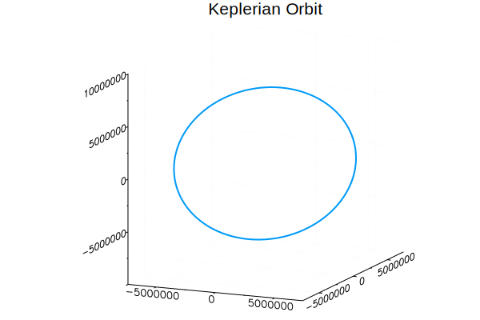
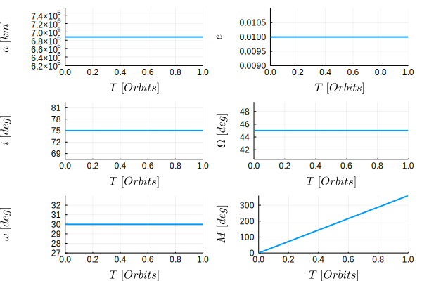
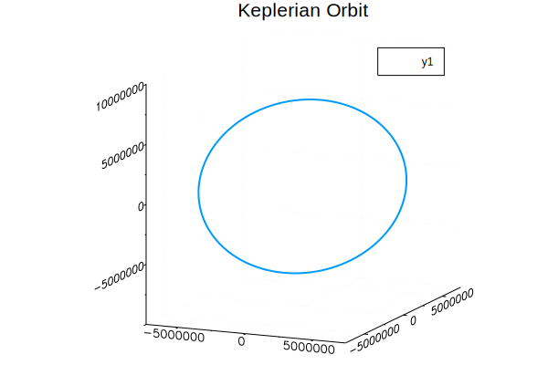
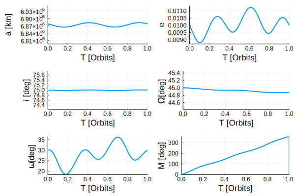

Orbit Propagation
One of the primary features that SatelliteDynamics.jl aims to make easily accessible to users, is the ability to perform high-fidelity orbit propagation in an easy and customizable manner. In the example we will show how to simulate a satellite orbits using the tools provided in this module.
To start out we will perform an orbit propagation using the most basic orbit model possible: a point-mass approximation of Earth's gravity without any other perturbation models added on.
Keplerian Orbit
First, we must declare the initial conditions for the simulation. This entails declaring an initial Epoch as well as the inertial Cartesean state of the statellite at that Epoch.
# Declare simulation initial Epoch
epc0 = Epoch(2019, 1, 1, 12, 0, 0, 0.0)
# Declare initial state in terms of osculating orbital elements
oe0 = [R_EARTH + 500e3, 0.0, 90.0, 0, 0, 0]
# Convert osculating elements to Cartesean state
eci0 = sOSCtoCART(oe0, use_degrees=true)Next, simulate the orbit:
# Set the propagation end time to one orbit period after the start
T = orbit_period(oe0[1])
epcf = epc0 + T
# Propagate the orbit
t, epc, eci = simulate(orb, epcf, timestep=1, dtmax=1)Putting it all together we have:
# Declare simulation initial Epoch
epc0 = Epoch(2019, 1, 1, 12, 0, 0, 0.0)
# Declare initial state in terms of osculating orbital elements
oe0 = [R_EARTH + 500e3, 0.01, 75.0, 45.0, 30.0, 0.0]
# Convert osculating elements to Cartesean state
eci0 = sOSCtoCART(oe0, use_degrees=true)
# Set the propagation end time to one orbit period after the start
T = orbit_period(oe0[1])
epcf = epc0 + T
# Initialize State Vector
orb = EarthInertialState(epc0, eci0, dt=1.0,
mass=1.0, n_grav=0, m_grav=0,
drag=false, srp=false,
moon=false, sun=false,
relativity=false
)
# Propagate the orbit
t, epc, eci = sim!(orb, epcf)And that's it! All it took was 6 lines of code with the SatelliteDynamics module to propagate an orbit.
We can visualize the orbit in inertial space:

Or the evolution of the orbital elements:

Full Force Model
We can also repeat the same propagation with a full force orbit model to see the effect of perturbations on the orbital elements:
# Declare simulation initial Epoch
epc0 = Epoch(2019, 1, 1, 12, 0, 0, 0.0)
# Declare initial state in terms of osculating orbital elements
oe0 = [R_EARTH + 500e3, 0.01, 75.0, 45.0, 30.0, 0.0]
# Convert osculating elements to Cartesean state
eci0 = sOSCtoCART(oe0, use_degrees=true)
# Set the propagation end time to one orbit period after the start
T = orbit_period(oe0[1])
epcf = epc0 + T
# Initialize State Vector
orb = EarthInertialState(epc0, eci0, dt=1.0,
mass=100.0, n_grav=20, m_grav=20,
drag=true, srp=true,
moon=true, sun=true,
relativity=true
)
# Propagate the orbit
t, epc, eci = sim!(orb, epcf)We can visualize the orbit in inertial space:

Or the evolution of the orbital elements:

From these plots we can see the effect of the orbit perturbations on each of the orbital elements.